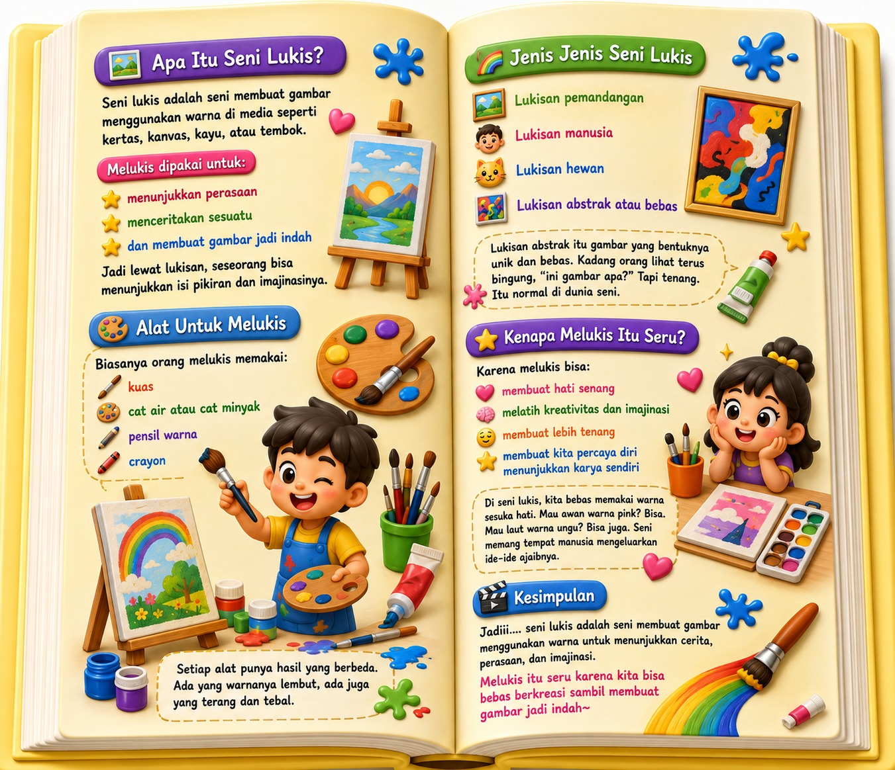
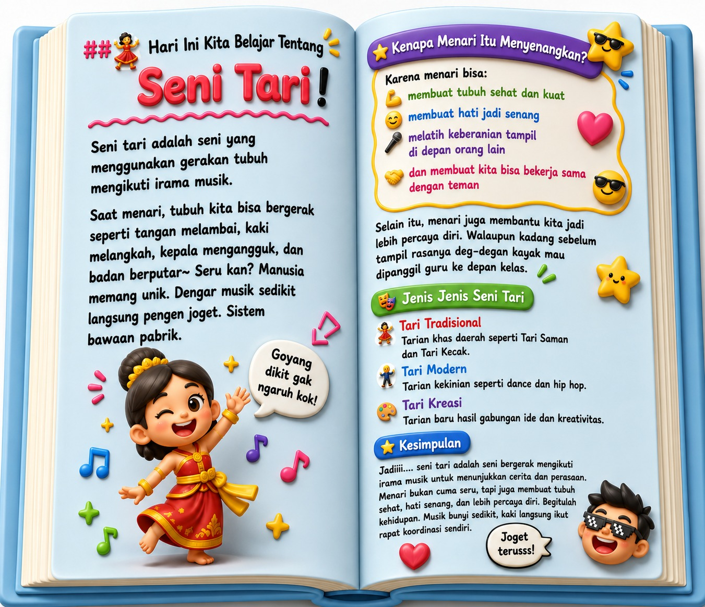
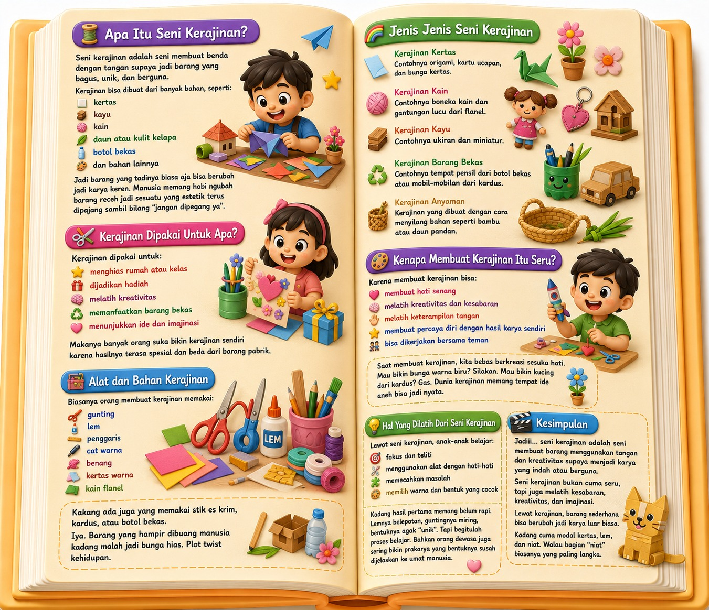
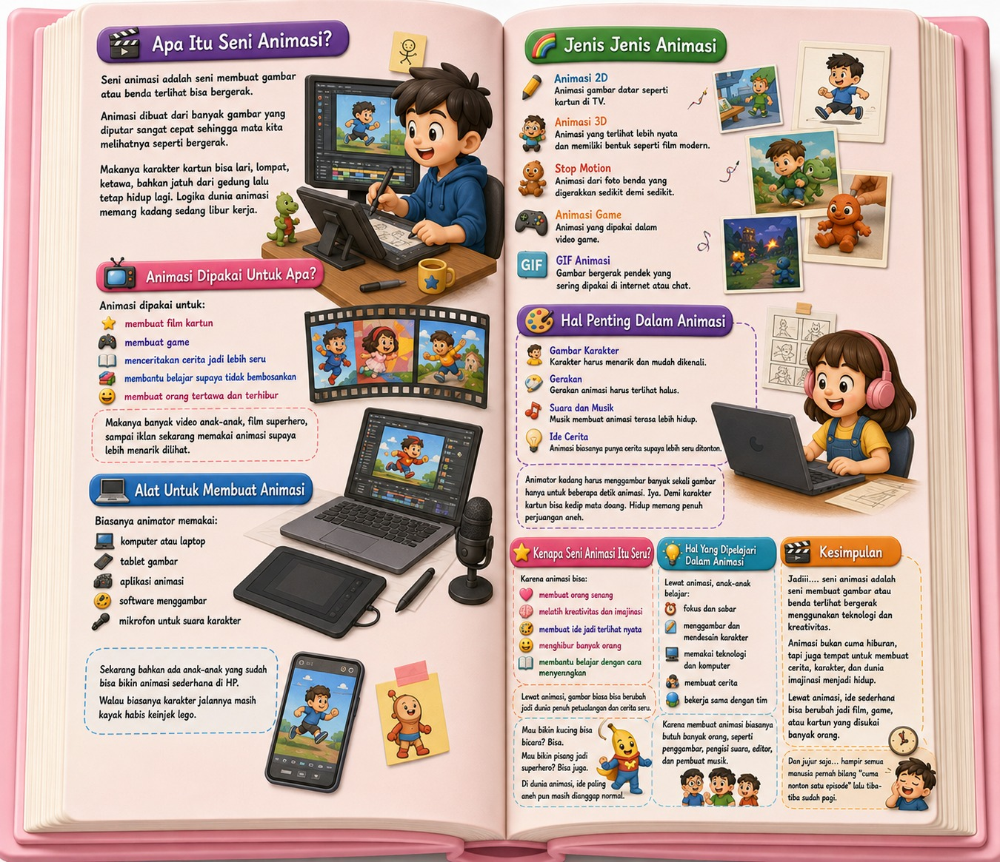
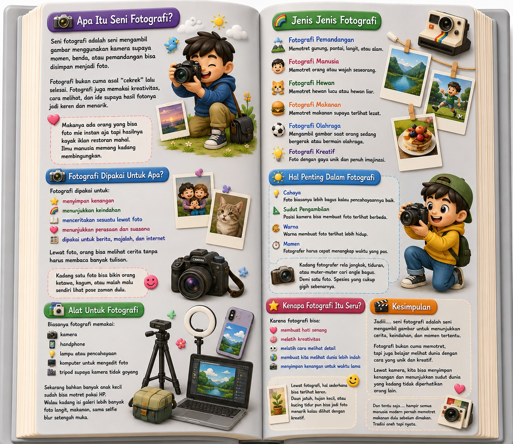

Platform Belajar Seni Modern
Selamat Datang di ARTOPIA
Tempat seru untuk mengenal dunia seni. Belajar berbagai jenis seni menjadi lebih menyenangkan dengan tampilan modern, penuh warna, dan interaktif.

Memuat dunia seni...
Tempat seru untuk mengenal dunia seni. Belajar berbagai jenis seni menjadi lebih menyenangkan dengan tampilan modern, penuh warna, dan interaktif.
Temukan berbagai jenis seni dengan cepat.
Jenis Seni
Karya Inspiratif
Fakta Menarik
Pengunjung Kreatif
Kenali dulu sebelum menjelajah lebih jauh.

Seni merupakan kemampuan manusia untuk mengekspresikan ide, emosi, pengalaman, dan imajinasi menjadi sebuah karya yang dapat dinikmati.
Seni tidak hanya membuat sesuatu terlihat indah, tetapi juga mampu menyampaikan pesan, cerita, dan perasaan kepada orang lain.
Melalui seni, seseorang dapat menunjukkan kreativitas dan menciptakan sesuatu yang unik.
Seni berkembang bersama perkembangan manusia.
Lukisan gua menjadi salah satu bentuk seni pertama yang diketahui.
Teater dan patung berkembang menjadi bagian penting budaya.
Banyak karya seni terkenal lahir dan mempengaruhi dunia hingga kini.
Fotografi, film, desain grafis, dan seni digital mulai berkembang.
Setiap seni memiliki keunikan tersendiri.
Seni membuat gambar menggunakan warna pada media seperti kanvas, kertas, atau dinding.
Seni yang menggunakan gerakan tubuh sebagai media penyampaian pesan.
Seni yang menggunakan bunyi, ritme, dan melodi.
Seni pertunjukan yang memadukan akting, cerita, dan panggung.
Karya seni tiga dimensi yang dapat dilihat dari berbagai sisi.
Seni menangkap momen menjadi karya visual yang menarik.
Seni membuat benda yang indah dan bermanfaat dengan keterampilan tangan menggunakan berbagai macam bahan.
Seni membuat gambar atau objek tampak bergerak untuk menceritakan sebuah cerita atau menyampaikan informasi.
Jelajahi berbagai cabang seni seperti sedang menjelajahi perpustakaan digital modern.

Ekspresi melalui warna dan gambar.

Gerakan indah penuh makna.

Bahasa universal melalui bunyi.

adalah seni membuat benda yang indah dan bermanfaat dengan keterampilan tangan menggunakan berbagai macam bahan.

adalah seni membuat gambar atau objek tampak bergerak sehingga dapat digunakan untuk menceritakan suatu cerita atau menyampaikan informasi.

Mengabadikan momen menjadi karya.
Dua gaya yang berbeda namun sama-sama menarik.
Seni yang diwariskan turun-temurun dan menjadi bagian dari budaya masyarakat.
Seni yang berkembang mengikuti zaman dan sering menggunakan teknologi.
Setiap seni memiliki fungsi dan keunikan tersendiri.
Seni menciptakan gambar menggunakan warna pada media tertentu seperti kanvas dan kertas.
Seni yang menggunakan gerakan tubuh sebagai sarana ekspresi dan komunikasi.
Seni yang memanfaatkan nada, irama, dan melodi untuk menciptakan keindahan suara.
Seni pertunjukan yang menggabungkan akting, dialog, musik, dan panggung.
Seni menangkap momen dan emosi melalui kamera.
Seni yang dibuat menggunakan perangkat dan software digital.
Fakta unik yang mungkin belum kamu ketahui.
"Setiap anak adalah seniman. Tantangannya adalah tetap menjadi seniman saat dewasa."- Pablo Picasso
Melatih kreativitas, imajinasi, dan kemampuan berpikir kritis.
Tentu. Seni dapat dipelajari oleh siapa saja.
Lukis, musik, tari, fotografi, dan seni digital.
Temukan kreativitas tanpa batas bersama ARTOPIA.